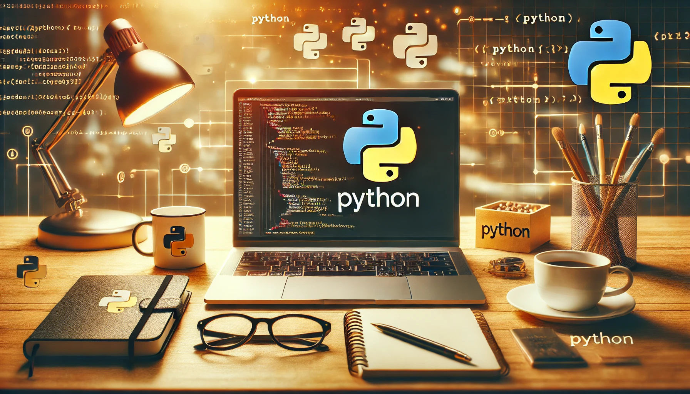
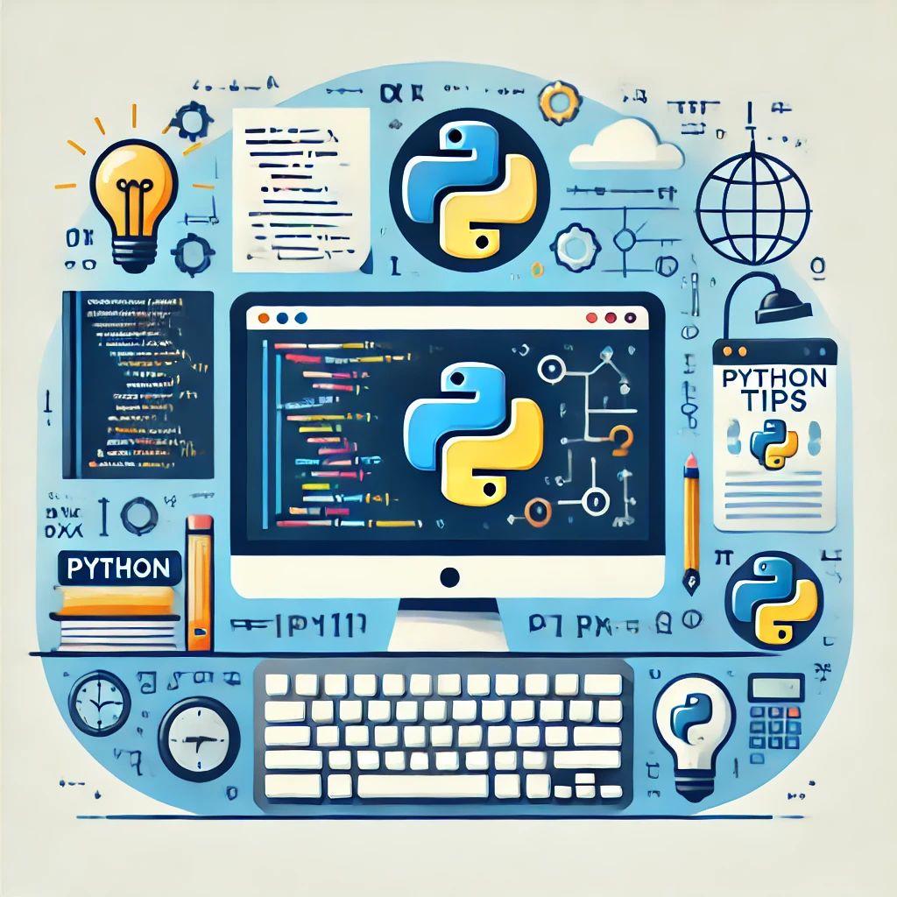

Python Programming: Quick Tips for Beginners
Published: December 18, 2024
Get started with Python programming with these essential tips designed to make your coding journey smoother and more enjoyable.
As an electrical engineer who loves exploring technology, I’ve found Python to be an invaluable tool for automating tasks, analyzing data, and even experimenting with AI projects. Here are some quick tips to help you navigate Python more effectively:
1. Keep Your Code Clean and Readable
Python emphasizes readability. Use meaningful variable names and follow PEP 8 guidelines for indentation and spacing. For example, prefer:
user_age = 25 # Clear and descriptive
over:
u = 25 # Ambiguous
2. Leverage Built-in Libraries
Python comes with powerful libraries that can save you time. Need to handle dates? Use
datetime. Working with math? Try math. For example:
from datetime import datetime
current_date = datetime.now()
print(f"Today's date is {current_date}")
3. Practice Debugging with Print Statements or Debuggers
Don’t let errors frustrate you. Use print statements to check variable values or step through your code with a debugger like the one in VS Code. For example:
print(f"Value of x: {x}")
4. Experiment with Jupyter Notebooks
Jupyter Notebooks are great for testing small code snippets and visualizing data. They’re widely used in data science but are also helpful for beginners learning Python.
5. Don’t Be Afraid to Ask for Help
Python has a welcoming community. Platforms like Stack Overflow, Reddit’s r/learnpython, or local meetups are great places to ask questions and share knowledge.
By focusing on these foundational tips, you’ll build a solid base for more advanced Python programming challenges. Remember, every expert was once a beginner—so keep experimenting and learning!
One trick I love is using list comprehensions to write concise loops. It feels a bit magical once you get the hang of it:
squares = [x*x for x in range(5)]
print(squares)
Python keeps surprising me with small features that make coding enjoyable. Explore, break things, and have fun!
